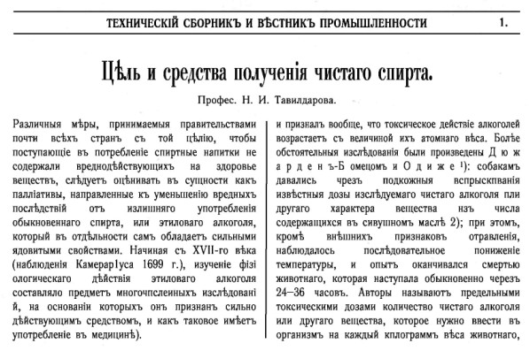
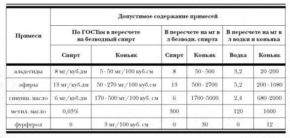
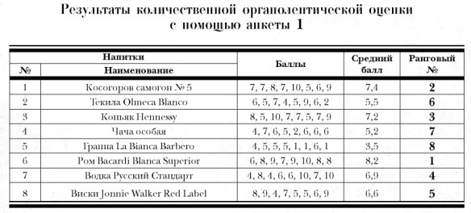
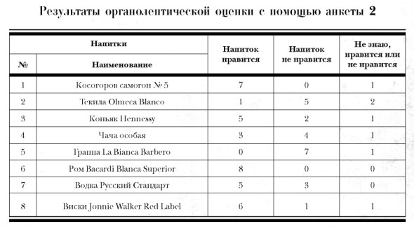

О примесях

Краткая речь в защиту сивушного масла и прочих «естественных примесей»
В этой главе мы будем использовать термин «водка» в современном смысле, то есть понимая его в первую очередь как смесь ректификованного (непременно!) спирта с водой. Производители водки, разумеется, могут при этом приводить свои стандартные возражения, что смесь спирта с водой — это еще не водка, а «сортировка», которая, чтобы стать водкой, должна еще как минимум быть подвергнута обработке активированным углем и пр., пр. Все это, безусловно, справедливо, но в то же время — это нюансы. Любой человек, которому вы дадите попробовать «сортировку», на вопрос «что это?» без колебаний ответит «водка» (по крайней мере, не самогон и другие напитки, полученные методом дистилляции). Нам ведь важно понять, чем же все-таки водка принципиально отличается от других напитков-дистиллятов. Суть водки — в ее чистоте, то есть в минимальном количестве примесей. И в этом смысле классической водкой является именно русское «монопольное» вино. И не только потому, что оно изготавливалось из ректификованного спирта — напитки на основе ректификата выпускались и в других странах, например английский джин.
Не менее важным было другое обстоятельство — она (водка) изготавливалась только из двух компонентов : ректификованного спирта и воды. Ничего более. То есть вкус классической водки состоит из, если можно так сказать, смеси двух вкусов — чистого спирта и воды. Кстати, в восприятии с этим связана и бесцветность водки, которая дает своего рода сигнал — перед нами чистая водно-спиртовая смесь. И только несколько позже в процессе изготовления водки стали использовать маленькие вкусовые добавки, но при этом чрезвычайно важно, что добавки эти лишь «улучшают», но ни в коей мере не заглушают основной вкус — «характерный водочный», иначе напиток будет всем, чем угодно — настойкой, наливкой, но только не водкой.
Другими словами, основа основ водки — вкусовая двухкомпонентность «спирт-вода». Иное дело — прочие напитки-дистилляты, включая русское хлебное вино. В них вкусовой доминантой являются отнюдь не этиловый спирт и вода, а третья компонента, именуемая примесями, причем примесями естественными, образующимися в процессе брожения, дистилляции и последующей (если необходимо) выдержки. То есть традиционные дистилляты, в отличие от водки, трехкомпонентны , а еще точнее — многокомпонентны, так как примеси являются смесью большого количества элементов. (Разумеется, это лишь схема, несколько упрощающая ситуацию, как и любая схема.) Конечно, и водка не совсем свободна от примесей, так как полностью удалить их практически невозможно. Однако главное здесь то, что для водки естественные примеси являются крайне нежелательной составляющей, чужеродной, подлежащей как можно более тщательному удалению. Более того, при превышении некоего порога по содержанию этих посторонних для водки веществ водка вообще перестает быть водкой. Для традиционных же дистиллятов все ровно наоборот — именно примеси и создают то, что определяет вкус и аромат, скажем, коньяка, виски, рома или текилы. Поэтому при дистилляции этих напитков задача винокура не удаление примесей, а бережное их сохранение в определенном количестве. Отделяются лишь наиболее органолептически неприятные, «лишние» составляющие.
Проблема, которую мы сейчас рассматриваем, заключается в следующем: этиловый спирт — сильнодействующий яд. Естественные примеси, если рассматривать их суммарно, — яд еще более сильнодействующий. Что является более опасным для организма — «чистый» яд или же смесь ядов? Ответ, казалось бы, лежит на поверхности: если к яду добавить более сильный яд, то суммарная токсичность подобной смеси, естественно, увеличится. Но не все так просто. Во-первых, случается, что один яд является противоядием по отношению к другому, а во-вторых, процентное содержание примесей в дистиллятах в любом случае таково (десятые доли процента), что априорно сказать, что их присутствие в смеси «этиловый спирт-вода» сколько-нибудь заметно повысит токсичность этой смеси, невозможно. Нужны серьезные исследования. И, конечно же, такие исследования проводились.
Однако прежде чем перейти к описанию сути этих исследований и выводов, сделанных на их основании, отметим, что в целом в мире существуют два устойчивых представления на этот счет. Одно из них, назовем его «российским», так как распространено оно в основном на пространствах бывшего СССР, сводится к следующему. Алкоголь должен быть чистым. Хорошая, то есть «чистая», водка относительно безопасна, и потому выпить ее можно много. Главная опасность — примеси, которые у нас в России традиционно ассоциируются исключительно с компонентами сивушного масла. Корнями это убежденность восходит к последней царской винной монополии 1895 г., когда активнейшим образом пропагандировалась «чистота питей» и утверждалось, как абсолютная истина, что
«вредоносное действие чистого этилового алкоголя резко усиливается с прибавлением к нему сивушных масел», [355]
цитируется по книге В. Ю. Кржижановского «Чистота казенных питей…»[356]
На бытовом уровне эта убежденность часто подкрепляется сентенциями типа «вчера выпили с приятелем бутылку виски на двоих — наутро голова раскалывалась. А три дня назад на дне рождения целую бутылку водки один употребил — и хоть бы что».
Что же касается иного подхода, назовем его условно «общемировым», то для него характерно практически вообще отсутствие понятия о «чистых» и «грязных» дистиллятах с точки зрения их токсичности. В крайнем случае речь может идти о, например, «дрянном дешевом виски», то есть напитке, изготовленном из плохого сырья с нарушением стандартной технологии. Если же все правила изготовления соблюдены, то для потребителя ничем не отличаются с точки зрения «вредности», допустим, «грязный» коньяк и «чистая» водка.
Поскольку в России все дистилляционные производства уничтожены (единичные коньячные заводы не в счет, так как там стоят современные высокопроизводительные установки и однокубовыми аппаратами и не пахнет), то для знакомства с процессами старинной дистилляции мне пришлось ехать в Европу. И первое время я приставал ко всем с вопросом, какие примеси допускаются в их продукции. Ни в одной «дистиллярне» меня не понимали. Я формулировал вопрос по-другому. Вот вы сделали продукцию и повезли ее в магазин. Какой документ вы предъявите покупателю, что ваш продукт не содержит примесей больше, чем можно? Оказалось, что такого документа нет. А если кто-то отравится? Мне отвечали: во-первых, любой дистиллят, изготовленный честно и официально, не может содержать ничего опасного, а во-вторых, если что-то подобное произойдет, будем отвечать по закону. После долгого разбирательства я наконец-то уяснил, что содержание примесей в странах Европы не регламентируется потому, что там давно поняли, что количество и качество образующихся естественным путем примесей никакого вредного влияния на здоровье в принципе оказать не могут. И только в нашей «водочной» стране контрольные органы буквально с ума сходят, контролируя все и вся, давая при этом работу армии надзирающих чиновников.
Чтобы разобраться в этом вопросе, мы попробуем выяснить, каковы же научные данные о влиянии примесей на токсичность алкогольных напитков-дистиллятов. О том, какие работы в этой области проводились в девятнадцатом веке, вкратце говорилось в главе, посвященной монополии 1895 г. Наиболее полно результаты этих работ изложены в обзоре проф. Тавилдарова, опубликованном в 1891 г.

Итак, у исследователей того времени существовали серьезные расхождения во взглядах. Вот типичный пример:
«Дюжарден-Бомец и Одиже классифицируют спирты различного происхождения по их возрастающей вредности (nocivite) в следующем порядке: спирт из виноградного вина (коньяк), водка из груш, водка из виноградных выжимок и сидра, спирт из зернового хлеба, спирт из свекловицы и свекловичной патоки и спирт из картофеля. При дальнейших опытах оказалось, что употребление в течение 30 месяцев очищенного спирта различного происхождения производит почти незаметные нарушения в организме, между тем как употребление неочищенного спирта (хлебного, картофельного, паточного) вызывает весьма ясно выраженные вредные последствия. Вместе с тем Дальстром при подобных же опытах не заметил разницы в действии очищенного и сырого спирта» [357]
Тем не менее постепенно вырисовывалась позиция, к которой склонялось европейское научное большинство. Сформулировать ее можно следующим образом: естественные примеси хотя и являются в целом более токсичными, чем этанол, однако в тех количествах, в которых они обычно присутствуют в дистиллятах, сколько-нибудь существенного влияния на общую токсичность смеси не оказывают. Особенную убедительность этой точке зрения придали работы Страсмана и Цунца, выполненные в Германии в конце 80-х годов.
Страсман провел тщательно подготовленные и методически выверенные опыты на собаках по изучению сравнительного воздействия на организм сырого и ректификованного спиртов. Эксперимент продолжался около года. Выводы Страсмана были однозначны. Как пишет тот же Тавилдаров,
«на основании изложенных наблюдений Страсман приходит к заключению, что относительно более сильного действия спирта, содержащего 0,3–0,5 % сивушного масла, сравнительно с чистым спиртом, не имеется ни клинических, ни экспериментальных доказательств, и далее, что при указанных условиях в действиях того и другого спирта не обнаруживается никакого различия» [358]
Поясним, что в пересчете на миллиграммы 0,3–0,5 % составляет 3000–5000 мг на литр безводного спирта. А наш ГОСТ не допускает наличие сивушного масла в питьевом спирте более 6 мг на литр. Как вам такая разница?
Также весьма интересные эксперименты проводил берлинский профессор физиологии животных Цунц. В частности, он установил, что сколько-нибудь заметное действие сивушное масло оказывает на человеческий организм начиная с дозы в 1000–1500 миллиграмма. При среднем для Германии того периода содержании сивушного масла в сырых спиртах ~ 0,4 % (на абсолютный алкоголь) для того, чтобы принять такую дозу, человеку необходимо выпить приблизительно литр 40 %-ной смеси спирта-сырца с водой.[359] (В спирте-сырце по современным нормам содержится до 5000 мг сивушного масла.[360])
Кстати, работы эти проводились в связи с тем, что в Германии с октября 1899 г. предполагалось ввести закон об обязательной очистке спирта (кроме зернового), идущего на приготовление напитков. Однако данные, полученные исследователями, были настолько убедительны, что закон этот так и не был принят. Победила точка зрения Цунца, в соответствии с которой
«вредные последствия употребления спирта зависят не от сопровождающих его веществ, а от неумеренного количества его, употребляемого в виде напитков с высоким содержанием алкоголя» [361]
Продвинутый читатель вправе задать вопрос: «Как же так, ведь доподлинно известно, что, допустим, изоамиловый спирт значительно вреднее этилового, да еще и отвратительно пахнет. Неужели его присутствие в напитке не увеличивает токсичность последнего?» На этот вопрос Николай Иванович Тавилдаров отвечает так:
«На основании приведенных опытов и соображений Цунц приходит к выводу, что хотя амиловый алкоголь владеет более ядовитыми свойствами, чем этиловый, но физиологическое действие его идет в том же направлении, т. е. он только усиливает влияние последнего»
Так как вывод этот чрезвычайно важен, сошлемся еще на одно исследование — более позднее (1912 г.) и проведенное российским ученым, профессором из Казани И. М. Догелем.[362]
Цитата:
«Имея в виду, что в водке имеется некоторая примесь пропильного, бутильного и амильного спирта, я счел нужным исследовать влияние этих спиртов на организм»
Надо отдать должное автору: он провел скрупулезнейшее исследование влияния на живой организм как этилового спирта, так и компонентов сивушного масла (амилового, пропилового и бутилового спиртов). На основании этих исследований, проведенных на собаках и кроликах, автор приходит к следующему выводу:
«Спирты жирного ряда, одноатомные, насыщенные, имеют сходное химическое строение и оказывают на животный организм сходное действие, разнящееся для разных спиртов между собою лишь по силе, но не по качеству»
Что означает этот вывод? Да только то, что напиток, содержащий помимо этилового спирта сивушное масло, обладает несколько большим опьяняющим воздействием и не более того. Дадим вновь слово Тавилдарову:
«По наблюдениям французских ученых смертельная доза этилового спирта составляет 7,5 грамм на каждый килограмм веса животного, и то же действие достигается при 1,5 грамма амилового алкоголя, — другими словами, последний в 5 раз ядовитее обыкновенного спирта. Не отвергая этого вывода, Цунц оценивает его в отношении практическом, представляя следующее соображение: в неочищенном спирте средним содержанием можно принять 0,4 % сивушного масла, так что вред от его присутствия выражается отношением 100:102, т. е. как если бы человек вместо 100 частей принял 102 части чистого спирта»
Понимаете? При содержании сивушного масла 0,4 % (чудовищно с точки зрения ГОСТа на водку!) эффект сводится лишь к тому что выпили вы алкогольный напиток не в сорок градусов, а в сорок один.
Словом, как уже отмечалось, несмотря на разноголосицу мнений, в целом ученые, начиная с девятнадцатого века, полагали, что при содержании естественных примесей в дистиллятах в «обычных» количествах серьезных оснований для беспокойства нет. Пожалуй, в последний раз активный интерес к этой теме возник в США в 20–30-х годах XX в. Тогда в рамках национальной антиалкогольной кампании проводились фундаментальные исследования, посвященные влиянию алкоголя на человеческий организм, издавались многочисленные книги и брошюры научного и просветительского характера.
Вывод был все тем же: ничего принципиального в токсическое воздействие этанола компоненты сивушного масла не привносят, лишь слегка усиливая его.
Таким образом, можно считать, что вопрос о влиянии естественных (т. е. образующихся в процессе дистилляции) примесей на токсичность алкогольных напитков, в общем-то, был закрыт.
Но только не в нашей стране! Как мы уже знаем, при введении в России питейной монополии 1895 г. правительство развернуло беспрецедентную кампанию по борьбе за «чистоту питей», превратив идею «чистой водки» в своего рода знамя. Во времена же СССР постулат об «исключительной вредности примесей» превратился в аксиому, не подлежащую ни малейшим сомнениям. Так же не вызывает сомнения и цель этой пропаганды — борьба с самогоноварением, подрывающим доходность «алкогольного бизнеса» государства.
Однако начиная с 90-х годов прошлого века, уже после отмены последней (советской) монополии на водку, интерес к этой теме возник снова. Причиной тому стало огромное количество разномастного крепкого алкоголя, в том числе и фальсифицированного, появившегося в тот период в стране. В результате в России был проведен целый ряд исследований, посвященных изучению влияния примесей различного происхождения (как естественных, так и искусственных) на токсичность различных крепких напитков-дистиллятов. Работы проводились в НИИ наркологии Минздрава России в Москве, Институте токсикологии в Санкт-Петербурге и Институте теоретической и экспериментальной биофизики РАН в г. Пущино. В отличие от коллег девятнадцатого века современные ученые обладают мощной инструментальной базой для исследований, и хотя работы эти еще далеки от своего окончательного завершения, результаты, полученные на сегодняшний день, позволяют сделать вполне определенные выводы по ряду ключевых вопросов. Попробуем коротко эти выводы сформулировать. Основываться мы будем в первую очередь на исследованиях НИИ наркологии, проводившихся коллективом под руководством д.м.н. В. П. Нужного, имея в виду, что другими научными коллективами были получены сходные результаты.
А начнем мы с того, что же собственно за вещества по современным данным входят в состав примесей, в каком количестве они присутствуют в водке, с одной стороны, в прочих напитках-дистиллятах — с другой, и как влияет их присутствие на токсичность напитков.
Веществ (помимо этанола и воды), содержащихся в дистиллятах, очень много. Методом газовой хроматографии обнаруживаются даже в ректификованных спиртах: альдегиды и кетоны (уксусный, пропионовый, муравьиный, масляный, кротоновый альдегиды, акролеин, диацетил, ацетон); эфиры (уксуснометиловый, уксусноэтиловый, масляноэтиловый, диэтиловый, пропионометиловый, пропионоэтиловый, изомасляноизобутиловый); спирты (изопропиловый, пропиловый, изобутиловый, бутиловый, амиловый, изоамиловый, вторичный бутилкарбинол, метиловый, гексиловый, гептиловый, вторичный и третичный бутиловый, пентанол-2); кислоты (уксусная, масляная, изомасляная, валериановая, изовалериановая, пропионовая); амины (метиламин, диметиламин, триметиламин, этиламин, диэтиламин, триэтиламин) и ряд других неидентифицированных примесей.[363]
Разумеется, в первую очередь интерес представляют те из них, содержание которых регламентируется ГОСТом. (А значит, по мнению составителей ГОСТа, являются либо наиболее токсичными, либо отрицательно влияющими на органолептику.) К ним относятся альдегиды, сивушное масло, эфиры и метиловый спирт.
Альдегиды .
«Альдегиды представлены в этиловом спирте и алкогольных напитках, в основном, уксусным, а также пропионовым и масляным альдегидами. Особенно интенсивно альдегиды образуются при перегонке вина в коньячный спирт и при хересовании вин. При старении спиртных напитков количество альдегидов в них увеличивается. В этиловом спирте и алкогольных напитках альдегиды частично восстанавливаются в соответствующие спирты, взаимодействуют с побочными продуктами брожения и конденсируются с фенолами или азотистыми веществами с образованием меланоидов. Альдегиды, особенно непредельные (акролеин, кротоновый альдегид), и диацетил придают этиловому спирту резкий запах, жгучий привкус и горечь. Вместе с тем, альдегиды формируют букет многих вин и коньяков» [364]
Сивушное масло.
На бытовом уровне, да и зачастую в литературе используется выражение «сивушные масла». С точки зрения науки употребление множественного числа в данном случае бессмысленно, так как предполагает наличие набора неких сивушных масел. На самом деле сивушное масло представляет собой смесь высших (С3–С10) одноатомных алифатических спиртов, эфиров и других соединений (всего около 40 компонентов, 27 из которых идентифицировано), получаемых при ректификации спирта-сырца (и дистилляции алкогольных напитков. — Прим. авт. ). Часть из них неизбежно остается в ректификате.[365] Каждый компонент имеет свое название, и только для обозначения их смеси применяется термин «сивушное масло», всегда употребляемый в единственном числе. В нашей стране сивушное масло на бытовом уровне буквально предано анафеме и у обывателя устойчиво ассоциируется с чем-то вредным, токсичным и вонючим. Между тем вкус и аромат всех вин и мировых дистиллятов, включая коньяк и виски, во многом определяется благодаря присутствию этого самого сивушного масла.
Метиловый спирт (метанол).
Является наиболее трудно отделяемой примесью в процессе ректификации этилового спирта. По своим органолептическим свойствам он мало отличается от этилового спирта и поэтому является одним из основных виновников случайных смертельных отравлений.
Токсическое воздействие метанола на организм человека намного сильнее этилового спирта (разовая смертельная доза 96 %-ного этилового спирта для человека с повышенной толерантностью составляет примерно 400 мл, в то время как смертельная доза метанола обычно колеблется в пределах 30–250 мл.[366])
Если с влиянием чистого метанола все ясно, то комбинированное воздействие метанола и этилового спирта на организм человека до сих пор вызывает споры. По мнению одних исследователей, происходит простое суммирование их токсических эффектов.[367] По данным других авторов, одновременное воздействие этих спиртов сопровождается потенцированием их токсического действия.[368] С другой стороны, применение этилового спирта в качестве антидота (противоядия) при отравлении метанолом, на первый взгляд, противоречит и первому и второму предположению.[369]
Эфиры.
« Представляют собой продукты взаимодействия спиртов с органическими кислотами. Большинство эфиров обладают приятным запахом, определяющим аромат многих вин. Эфиры с большим числом атомов углерода сообщают спирту несвойственный ему фруктовый или цветочный запах. Диэтиловый эфир в небольших количествах усиливает запах спирта, а муравьиноэтиловый и уксусноэтиловый — смягчают его. Эфиры, присутствующие в этиловом спирте и алкогольных напитках, относятся, в основном, к мало- или среднетоксичным соединениям и в указанных концентрациях, по-видимому, не оказывают влияния на токсическое действие этанола» [370]
Предельно допустимые концентрации основных примесей в алкогольных напитках жестко регламентируются существующими нормами, так называемыми ГОСТами. В области крепких алкогольных напитков существует всего два основных ГОСТа — на этиловый спирт и на коньяк. Остальные (водка, настойки, ликеры и т. п.) не в счет, так как регламентируемые ими напитки предписано изготавливать из ректификованного этилового спирта, и содержание примесей в них определяется соответствующими требованиями к этиловому спирту. Коньяк же в нашей стране является единственным гостируемым представителем группы напитков-дистиллятов. Поэтому представляет большой интерес сравнить требования по содержанию примесей в водке и в коньяке. Сделать это, просто сравнивая приведенные в ГОСТах цифры, невозможно, поскольку, не знаю уж по какой причине, в разных ГОСТах они даны в разных измерениях. Более того, все цифры даны применительно к 100 %, так называемому безводному спирту, в то время как абсолютное большинство пьющего населения употребляет гораздо менее крепкие напитки. Пришлось произвести несложные арифметические вычисления, чтобы привести все это разнообразие в единую таблицу и привести к единой единице, показывающей, какое содержание примесей в мг допускается в одном литре 40 %-ных водки и коньяка. В основу положены ГОСТ на этиловый спирт,[371] ГОСТ на коньячный спирт[372] и ГОСТ на коньяк.[373]
Что же касается нормы на метиловый спирт, то в отношении коньяка ее не удалось вписать в эту таблицу. Дело в том, что в ГОСТе на коньячный спирт указано предельное его содержание 1,2 г/куб. дм не в пересчете на безводный спирт, а в самом коньячном спирте. Учитывая, что минимальная крепость коньячного спирта по тому же ГОСТу — 55 %, то в пересчете на 40 %-ный коньяк допустимое содержание метанола должно быть 873 мг на литр. В ГОСТе на коньяк дается чуть большая цифра — 1 г/куб. дм, что соответствует 1000 мг на литр, причем независимо от его крепости, которая находится в пределах 40–45 %.

Полученная картина дает прелюбопытнейший материал для размышлений. Лимитирование примесей в алкогольных напитках, очевидно, преследует две цели — забота о здоровье наших граждан и поддержание неких вкусовых стандартов. О заботе о вкусе явно говорит последняя колонка вышеприведенной таблицы. Альдегиды, эфиры и сивушное масло лимитируются не только по верхней границе, но и по нижней. Другими словами, в коньяке не допускается содержание примесей меньше некоторого количества. Это невозможно объяснить с точки зрения токсичности заботой о здоровье граждан. Просто, очевидно, при их отсутствии или уменьшении ниже регламентированного предела коньяк перестает быть коньяком, так как эти примеси активно участвуют в формировании его вкусоароматического букета.
А вот цифры в той же колонке, относящейся к коньяку, определяющие верхнее значение нормы, видимо, указывают на опасность для здоровья, возникающую при их превышении. Следовательно, содержание указанных примесей в любых алкогольных напитках (по крайней мере 40-градусных) в пределах приведенных значений для коньяка является безопасным для здоровья. Этот вывод является категоричным и обсуждению не подлежит, так как наши санитарные службы костьми лягут, но не допустят в своих нормативных документах ни малейшей опасности для здоровья потребителей.
А теперь посмотрим на соответствующие цифры для водки. Видно, что с точки зрения токсичности они абсолютно бессмысленны. Особенно хорошо это видно на примере сивушного масла. ГОСТ на коньяк говорит, что сивушное масло безвредно в концентрации до 2000 мг на литр, а ГОСТ на водку не допускает его содержание выше 2,4 мг на литр, то есть почти в 1000 раз (!) меньше…
Абсолютно ясно, что цифры, указанные в ГОСТе на водку, никакого отношения к токсичности не имеют. Иначе они были бы точно такими же, как в коньяке. Единственное логическое объяснение для этих значений лежит в области все той же органолептики. Видимо, если указанные пределы будут превышены, то водка потеряет характерный для нее вкус и аромат. Есть большие сомнения в том, что приведенные в ГОСТе цифры всерьез обосновывались заботой об органолептике. Скорее всего, они являются следствием развязанной еще в конце XIX века борьбы за «чистоту питей», когда война с примесями стала самоцелью. ГОСТ на коньяк со всей очевидностью показывает бессмысленность этой борьбы с точки зрения токсичности, а с точки зрения органолептики, похоже, эти цифры никто не анализировал. Скорее всего, то, что современные российские стандарты допускают содержание в спирте, а следовательно, и в водке каких-то минимальных количеств примесей, является вынужденным компромиссом между унаследованным от царской монополии стремлением избавиться от них вообще и экономически оправданными техническими возможностями современных производств. И ни токсичность, ни органолептика к ГОСТу на водку не имеют никакого отношения.
И если при советской власти жупел чистоты (безвредности) водки являлся флагом в борьбе с самогоноварением, то в настоящее время ее «чистота» является чисто (простите за тавтологию) маркетинговым ходом в борьбе за симпатии покупателей. Благо, что эта идея ложится на хорошо подготовленную в течение уже более ста лет основу. А то, что под этой основой нет и никогда не было фундамента, замороченный потребитель и знать не знает.
В какой степени примеси все же увеличивают токсичность водно-спиртовой смеси? Ответу на этот вопрос было посвящено отдельное исследование. Суть его сводилась к следующему: в водно-спиртовую смесь искусственно добавлялось сивушное масло и компоненты эфиральдегидной (головной) фракции в разных количествах. Тем самым получались растворы, имитирующие продукты дистилляции разной степени очистки.
Действие этих экспериментальных растворов изучалось на мышах и крысах.[374] Вот как сами авторы формулируют вывод из результатов этого исследования:
«…нами было установлено, что компоненты эфироальдегидной фракции и сивушного масла обладают способностью усиливать острое и подострое действие этилового спирта. Однако модифицирующее влияние этих примесей выявляется лишь в концентрациях, превышающих таковые в большинстве дистиллированных алкогольных напитков» [375](Острое действие — летальное и наркотическое, подострое — степень повреждения печени и слизистой оболочки желудка, а также тяжесть похмельного синдрома. Модифицирующее влияние — способность изменять, в данном случае усиливать, токсическое воздействие этилового спирта.)
Другими словами, токсичность крепкого алкоголя, как ректификованного, так и дистиллированного, определяется практически исключительно этанолом, а не наличием примесей.
Причем, по утверждению В. П. Нужного,[376] этот вывод справедлив даже при использовании синтетического и гидролизного спиртов. Мы же подобные криминальные случаи даже не рассматриваем, ограничиваясь сопоставлением вполне легальных напитков, выработанных исключительно из пищевого сырья. С этой точки зрения для нас представляют большой интерес работы, в которых проводится непосредственное сравнение водок с традиционными напитками-дистиллятами, такими как коньяк и виски.[37,38]
В первой из них проводились сравнительные исследования этилового спирта-ректификата, разведенного до стандартной крепости 40 %, виски Catty Sark и коньяка Hennessy v. s. Сравнение проходило по тем же параметрам (летальное и наркотическое действие, острота повреждения печени и слизистой оболочки желудка, тяжесть похмельного синдрома). Кроме того, определялась способность напитков вызывать привыкание. Результаты этого исследования полностью подтверждают сделанный ранее вывод: токсическое воздействие «чистой» водки на живой организм нисколько не ниже, чем «грязных» коньяка и виски. Более того, водный раствор спирта-ректификата в заметно большей степени вызывает синдром привыкания, нежели напитки-дистилляты.
Не менее существенно и второе исследование сравнительного воздействия водки и дистиллятов. Те же самые жидкости испытывались на беременных крысах и их потомстве, а, как известно,
«процесс развития эмбриона и плода является весьма чувствительным к действию алкоголя» [378]
Результаты в контексте приведенного выше вполне ожидаемы:
«Полученные данные не подтверждают распространенное мнение о том, что летучие примеси, образующиеся в процессе ферментации и с трудом отделяемые в процессе последующей дистилляции и ректификации алкоголя (метанол, альдегиды, высшие спирты и др.), резко повышают токсичность алкогольных напитков. И, во-вторых, компоненты неалкогольной природы, присутствующие в коньяке и виски, обладают способностью предупреждать развитие феномена предпочтительного потребления этанола у животных, подвергавшихся воздействию алкоголем в процессе внутриутробного развития» [379]
Собственно означает все это лишь одно: крушение очередного мифа о водке. «Самая чистая», являясь нисколько не менее вредной, нежели ее собратья-дистилляты, в чем-то их даже «превосходит» — например, гораздо быстрее вызывает эффект привыкания. А привыкание — это не что иное, как алкоголизм. Этому есть и теоретическое объяснение. Известно, что чем чище наркотик, тем он страшнее. «Грязный» опиум надо принимать довольно долго, чтобы получить необратимую зависимость, а изготовленный из него «чистый» героин может сделать из человека своего раба за один, максимум два укола. А этиловый спирт относится к сильнодействующим наркотикам.
В ГОСТе за 1972 год (ГОСТ 18300-72) в п. 5.1 так прямо и говорилось:
«Этиловый спирт — легковоспламеняющаяся, бесцветная жидкость с характерным запахом, относится к сильнодействующим наркотикам, вызывающим сначала возбуждение, а затем паралич нервной системы».
В 1982 году редакция этого пункта привела к некоторому сокращению текста:
«Этиловый спирт — легковоспламеняющаяся, бесцветная жидкость с характерным запахом, относится к сильнодействующим наркотикам».
Все последующие ГОСТы продолжали урезать первоначальное определение. 1993 год (ГОСТ 5964-93, п. 7.1)
«Этиловый спирт — легковоспламеняющаяся, бесцветная жидкость с характерным запахом».
И наконец, в последней редакции ГОСТа за 2000 (ГОСТ Р 51652-2000, п. 5.2) год эта фраза сократилась до:
«Этиловый спирт — бесцветная легковоспламеняющаяся жидкость».
Учитывая, что впервые упоминание о «сильнодействующем наркотике» исчезло из ГОСТа в 1993 году, рискну предположить, что сделано это было под нажимом народившегося к тому времени класса частных собственников. Согласитесь, что делать алкогольные напитки из «бесцветной легковоспламеняющейся жидкости» как-то, скажем так, этичнее, чем из «сильнодействующего наркотика».
Как бы там ни было, но вполне возможно, что русский народ уже более ста лет сидит на «алкогольном героине».
И все удивляются и бьют тревогу, ну почему же в нашей стране алкогольные проблемы имеют намного более тяжелый характер, чем во всех других странах? А вы покажите хоть одну страну, в которой настолько бы преобладала водка.
В связи с этим опять возникает вопрос, почему же ГОСТ в таком случае столь жестко лимитирует содержание примесей? Выше говорилось, что, по логике, лимитироваться должны либо наиболее токсичные из них, либо те, что отрицательно влияют на органолептические свойства. Однако на практике все несколько сложнее. Рассмотрим это на примере фурфурола. Фурфурол — типичный представитель «хвостовой фракции». Является одним из самых токсичных веществ, образующихся при дистилляции, и казалось бы, совершенно естественно, что в ГОСТе на пищевой спирт ему посвящается отдельная строчка — содержание фурфурола в ректификованном спирте не допускается. Причем норма, предусматривающая полное отсутствие фурфурола в ректификованных спиртах, впервые появилась в России задолго до современного ГОСТа — в 1899 г.
«Принимая во внимание, что фурфурол — вещество с высоким токсическим эквивалентом (83), ректификованный спирт, давший фурфуроловую реакцию, в казну не принимается» [380]
Вместе с тем в ГОСТе на коньячный спирт разрешается присутствие фурфурола в количестве до 3,0 мг/100 куб. см или 30 мг/л безводного спирта. Дело в том, что фурфурол, имеющий запах ржаного хлеба, относится к классу ароматических альдегидов и играет очень важную роль в создании букета коньяка. Можно даже сказать, что без фурфурола нет коньяка как такового. Исходя из этого, можно было бы предположить, что имеет место компромисс: во имя создания букета приносится в жертву «безопасность» напитка. Кстати говоря, именно так ситуацию с наличием фурфурола в коньяке трактовали в дореволюционной России. В «Трудах Технического комитета» можно прочитать о том, что
«фурфуролом в коньяке пренебрегают ради развития в нем таких условий в химическом составе, от которых зависит главная ценность этого напитка» [381]
За рубежом, однако, никакой опасности, исходящей от присутствия фурфурола в дистиллированных напитках, не замечают вовсе. И основано это на многовековой практике, которая показала, что количество фурфурола, образующееся при правильной дистилляции, имеет серьезное, если не решающее, значение при создании букета напитка, но практически никак не влияет на его токсичность. Что же касается спиртов-ректификатов, то требование полного отсутствия в них фурфурола имеет давнюю историю, никак не связанную с высокой токсичностью этого альдегида.
В XIX в. количественное определение примесей в алкогольных дистиллятах представляло собой достаточно сложную задачу. В полной мере эти сложности проявились тогда, когда возникла необходимость оценивать степень очистки ректификованных спиртов, причем главные затруднения вызывала хвостовая фракция. Вот как излагал эту проблему в 1892 году д-р Ланг, директор лаборатории Швейцарского алкогольного управления.
«Погон характеризуется главным образом присутствием высших спиртов, высших жирных кислот и их эфиров, присутствием оснований и почти постоянным спутником высших алкоголей фурфуролом. Однако, в то время как наиболее существенная, никогда почти не отсутствующая, составная часть первогона состоит из альдегидов, легко обнаруживаемых, в погоне нет таких интегральных и регулярно встречающихся веществ, которые бы отличались высокой способностью к реакциям и могли бы быть легко обнаруживаемы… Единственное вещество, которое почти всегда содержится в погоне и которого высокая способность к реакциям дает возможность легко его обнаружить — это фурфурол, который, согласно новейшим исследованиям, образуется не прямо во время брожения, а лишь при перегонке содержащих спирт жидкостей» [382]
Далее доктор Ланг рассуждает следующим образом. Фурфурол всегда образуется в гораздо меньших количествах, нежели остальные примеси хвостовой фракции. Следовательно, если проба спирта дает фурфуроловую реакцию, то этот спирт наверняка содержит значительное количество остальных компонентов и должен быть повторно ректификован. Если же фурфурол отсутствует, то спирт подвергается последующему анализу с помощью хлороформа по так называемому способу Уффельмана. То есть анализ на присутствие фурфурола позволяет в некоторых случаях обходиться без дорогостоящего и относительно трудоемкого анализа по Уффельману сразу «отсекая» спирты, требующие повторной ректификации. Вывод же дается такой:
«Сопоставляя все вышесказанное относительно исследования спирта на примеси, свойственные погону, мы можем формулировать наши требования в этом отношении следующим образом: ректификованные спирты не должны содержать фурфурола, если только они не сохранялись в заведомо неудовлетворительно эмалированных деревянных бочках. При взбалтывании 200 куб. см разбавленного до 20° спирта с 20 куб. см хлороформа при испарении последнего не должно наблюдаться явственного запаха посторонних примесей. Однако относительно последнего требования необходимы еще дальнейшие исследования» [383]
Очень характерно то, что наличие фурфурола, экстрагированного из бочек, вполне допускается. Как видим, норма, предписывающая отсутствие в ректификате фурфурола, вовсе не связана с его токсичностью.
Выдержка из статьи доктора Ланга приведена потому, что именно она является источником соответствующего русского норматива. Дело в том, что в 1899 году профессор Вериго отчитывался о своей командировке в Берн по изучению опыта швейцарской монополии. К отчету прилагалась статья доктора Ланга, с которым Вериго познакомился в Швейцарии.[384] В том же году был издан циркуляр Министерства финансов № 361, в соответствии с которым русские ректификованные спирты должны были быть полностью свободны от фурфурола. Правда, мотивировка была иной:
«принимая во внимание, что фурфурол — вещество с высоким токсическим эквивалентом…» [385]
Разумеется, с точки зрения русской питейной монополии так было гораздо эффектнее: кампания «за чистоту питей» была в самом разгаре… Норматив этот, совершенно справедливый для ректификованных спиртов (для лабораторного уровня того времени), благополучно дожил до сегодняшних дней, причем вместе с «монопольной» мотивировкой, которая порождает некоторое недоумение — а что, в коньяках или виски фурфурол менее вреден? Или как?
История с фурфуролом превращает в убежденность предположение о том, что современные борцы за «чистоту» спирта и, соответственно, водки являются прямыми и, главное, бездумными наследниками апологетов царской монополии со всеми их наивными для того времени заблуждениями и целенаправленным игнорированием или интерпретированием данных науки, если они противоречили принятым установкам.
Возвращаясь к работам В. П. Нужного с коллективом, нельзя не обратить внимание на те из них, что ставят под серьезное сомнение еще один миф — о том, что русские исторически предпочитают водку всем прочим напиткам-дистиллятам. Чуть подробнее остановимся на одной: «Сравнительное исследование химического состава и органолептических свойств крепких дистиллированных напитков, произведенных из разного вида сырья»[386] Суть работы — слепая потребительская дегустация различных напитков-дистиллятов, а именно:
1. Самогон № 5 (Косогоров самогон № 5 виноградный), 45 % об., Россия.
2. Текила Olmeca Blanco, 38 % об., Мексика.
3. Коньяк Hennessy v. s., 40 % об., Франция.
4. Чача особая, 45 % об., Грузия.
5. Граппа La Bianca Barbero, 40 % об., Италия.
6. Ром Bacardi Blanca Superior, 40 % об., Пуэрто-Рико (США).
7. Водка Русский Стандарт, 40 % об., Россия.
8. Виски Шотландское смешанное Johnnie Walker Red Label, 40 % об., Шотландия.
Организован эксперимент был следующим образом:
«Для проведения потребительской дегустации были разработаны три анкеты. Анкета № 1 — предназначена для количественной оценки органолептических свойств алкогольных напитков в баллах. Анкеты № 2 и 3 предназначены для верификации результатов, полученных с помощью анкеты № 1. С помощью последних двух анкет выявляется общее отношение дегустатора к дегустируемому напитку.
Подбор дегустаторов . В качестве дегустаторов были приглашены мало или умеренно пьющие люди разного возраста — восемь мужчин и одна женщина. Три человека имели возраст 22–23 года, а шесть человек составили возрастную группу 51–66 лет. Все дегустаторы имели высшее образование. Среди них были психологи, социолог, врачи, биологи и педагог. Все дегустаторы работали в разных научных или медицинских учреждениях, имели достаточно высокий социальный статус и относительно низкий уровень дохода. Все дегустаторы ранее или вообще не употребляли, или редко употребляли алкогольные напитки, представленные на дегустацию (за исключением водки).
Порядок проведения дегустации. Все напитки, представленные на дегустацию, были обезличены. Для этого их перелили в одинаковые чистые бутылки из-под минеральной воды с завинчивающимися крышками и пронумеровали. Перед каждым дегустатором было поставлено по 8 пластмассовых стаканов, которые были также пронумерованы. В присутствии дегустаторов в стаканы были налиты соответствующие номерам алкогольные напитки в объеме 20–30 мл. Для восстановления вкусовых ощущений на столе находились ломтики черного хлеба и минеральная вода.
Перед проведением дегустации… была прочитана краткая лекция о видах дегустации, порядке проведения профессиональной, аналитической дегустации и были даны рекомендации по оценке аромата, вкуса и послевкусия напитка. Было предоставлено время для ознакомления с предложенными анкетами.
Далее, по команде ответственного исполнителя дегустаторы поочередно дегустировали напитки, занося свои оценки в персональные дегустационные листы с анкетами. В процессе дегустации дегустаторы изредка обменивались мнениями о том или ином напитке после занесения собственных оценок в анкеты» [387]
В соответствии с легендой о «национальном русском напитке» логично было увидеть в победителях водку, причем со значительным отрывом. Однако результаты выглядят более чем неожиданно:


Как видим, водка заняла более чем скромное четвертое место из восьми, а в победителях оказался… ром.
Разумеется, этот эксперимент носит вполне локальный характер: при других дегустаторах, ином подборе напитков и пр. результаты могут быть совершенно иными. В то же время возникают серьезные сомнения в том, что водка — напиток, наиболее соответствующий вкусовым предпочтениям российских граждан. Может быть, нас сознательно приучали пить водку? Помните замечательный риторический вопрос лаборанта Технического комитета Департамента неокладных сборов В. Ю. Кршижановского:
«Казенное управление, имея в виду сложившуюся привычку у потребителей некоторых районов к сильно щелочному вину, вынуждено изготовлять такое вино и выпускать его в продажу, но… если частные фирмы могли приучить потребителей к щелочному вину, то почему нельзя казенному управлению приучить тех же потребителей к более нейтральному вину путем постепенного понижения в столовом вине щелочности до величины в 100 и даже 50 миллигр. поташа в 1 литре, как в винах Долгова и Александрова?!» [388]
Так или иначе, но изучение истории «национального русского напитка» поневоле наводит на мысль, что водка — не столько выбор жителей России, сколько «казенного управления», и современная водка в этом случае является русским, но не национальным, а «государственным» напитком.
Во всяком случае, на сегодняшний день мы можем уверенно говорить, что с точки зрения физиологического воздействия на организм водка не имеет никаких преимуществ перед иными крепкими алкогольными напитками-дистиллятами:
«Естественные примеси в тех концентрациях, в которых они присутствуют в дистиллированных алкогольных напитках промышленного или домашнего изготовления, не оказывают влияния на острую токсичность этилового спирта» [389]
А это означает, что водка как массовый и фактически безальтернативный напиток появилась в России в результате… откровенной подтасовки. Ведь ни чем иным, как заботой о «народном здравии», мотивировался переход на изготовление напитков исключительно из ректификованных спиртов при введении винной монополии. И вот вам парадоксы истории: Россия в очередной раз осуществила эксперимент над собой, в результате которого выиграл остальной мир, открывший для себя совершенно новый напиток «vodka». Но при этом «остальной мир» обогатил свое алкогольное меню, а Россия его резко обеднила.
А мы переходим еще к одному, наверное, уже последнему вопросу, вызывающему бурные дискуссии: о происхождении и бытовании в русском языке слова «водка».